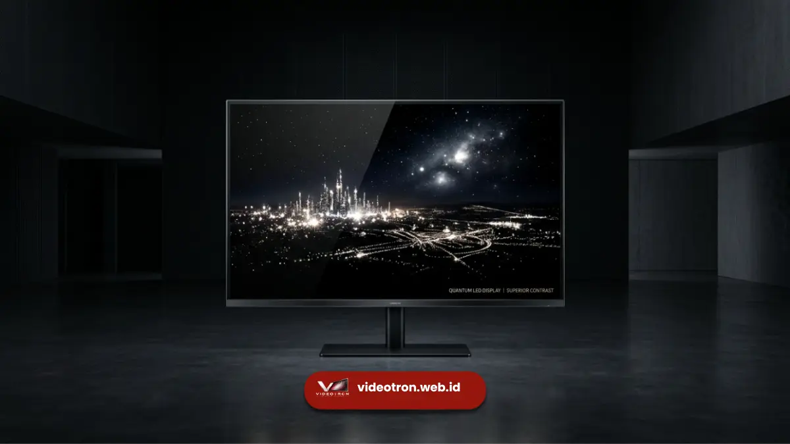

Grayscale videotron adalah jumlah tingkatan warna yang mampu ditampilkan layar LED dari titik paling gelap hingga paling terang pada setiap saluran warna.
Semakin tinggi tingkatan grayscale, semakin halus transisi warna yang dihasilkan videotron tanpa terlihat garis atau patahan warna.
Poin Penting:
- Grayscale menentukan jumlah gradasi warna yang dapat ditampilkan pada setiap saluran RGB
- Grayscale tinggi menghasilkan transisi warna lebih halus, terutama pada gambar dengan gradasi kompleks
- Grayscale berkaitan erat dengan bit depth pada sistem driver IC videotron
- Grayscale rendah dapat menyebabkan color banding atau garis patahan warna yang terlihat jelas
- Kualitas grayscale memengaruhi hasil tampilan video, foto, dan konten grafis pada videotron
Apa Itu Grayscale pada Videotron?
Grayscale pada videotron adalah jumlah level kecerahan yang dapat ditampilkan oleh setiap piksel LED pada satu saluran warna, mulai dari kondisi paling gelap hingga paling terang.
Istilah grayscale sering dikaitkan dengan bit depth, misalnya 8-bit, 12-bit, atau 16-bit grayscale.
Semakin tinggi bit depth, semakin banyak tingkatan warna yang dapat direproduksi pada setiap saluran merah, hijau, dan biru (RGB).
Videotron dengan grayscale 16-bit misalnya, mampu menghasilkan puluhan ribu tingkatan warna per saluran, jauh lebih banyak dibandingkan videotron dengan grayscale 8-bit.
Tingkatan grayscale ini berperan penting dalam membentuk keseluruhan palet warna yang dapat ditampilkan Videotron.
Karena kombinasi dari tiga saluran RGB tersebut menentukan total jumlah warna yang dapat direproduksi secara keseluruhan pada layar.
Mengapa Grayscale Penting untuk Transisi Warna Videotron?
Grayscale penting karena menentukan seberapa halus transisi antara satu warna dengan warna lainnya, terutama pada gambar atau video dengan gradasi warna yang kompleks seperti langit senja, bayangan, atau efek pencahayaan pada konten visual.
Videotron dengan grayscale rendah cenderung menampilkan transisi warna secara bertahap dengan lompatan yang terlihat jelas, dikenal sebagai fenomena color banding.
Kondisi ini membuat gradasi warna yang seharusnya halus justru terlihat berupa garis-garis warna yang terpisah jelas satu sama lain.
Beberapa manfaat grayscale tinggi pada videotron:
- Transisi warna pada gradasi kompleks tampil lebih halus dan alami
- Detail warna pada bayangan dan area gelap lebih terjaga
- Konten video sinematik dengan banyak variasi pencahayaan tampil lebih presisi
- Mengurangi risiko munculnya garis patahan warna yang mengganggu kualitas visual
Bagaimana Grayscale Berkaitan dengan Bit Depth Videotron?
Grayscale dan bit depth videotron saling berkaitan karena bit depth menentukan jumlah maksimum tingkatan grayscale yang dapat diproses oleh sistem driver IC pada setiap piksel LED.
Secara teknis, bit depth mengacu pada jumlah bit data yang digunakan untuk merepresentasikan tingkat kecerahan pada satu saluran warna.
Semakin tinggi angka bit depth, semakin besar pula jumlah tingkatan grayscale yang dapat dihasilkan secara matematis pada saluran tersebut.
Beberapa poin penting terkait hubungan keduanya:
- Bit depth lebih tinggi memungkinkan lebih banyak variasi warna yang dapat ditampilkan secara bersamaan
- Videotron dengan bit depth rendah cenderung lebih rentan terhadap color banding pada konten dengan gradasi halus
- Peningkatan bit depth umumnya turut memengaruhi kompleksitas dan kualitas komponen driver IC yang digunakan
- Kombinasi bit depth tinggi dengan refresh rate dan contrast ratio yang baik menghasilkan kualitas visual videotron yang lebih optimal secara keseluruhan

Kapan Grayscale Tinggi Menjadi Pertimbangan Penting?
Grayscale tinggi menjadi pertimbangan penting terutama pada penggunaan videotron untuk konten visual dengan gradasi warna kompleks, seperti produksi film, konten sinematik, atau tayangan dengan efek pencahayaan dinamis.
Untuk kebutuhan seperti digital signage sederhana dengan konten teks atau grafis flat, perbedaan grayscale mungkin tidak terlalu terasa signifikan. Namun untuk kebutuhan seperti backdrop panggung konser dengan visual dinamis, videotron untuk pemutaran film, atau konten branding dengan banyak elemen gradasi warna, grayscale tinggi dapat memberikan hasil visual yang jauh lebih baik.
Beberapa situasi yang perlu mempertimbangkan grayscale tinggi:
- Produksi konten visual dengan banyak elemen gradasi warna dan pencahayaan kompleks
- Penggunaan videotron untuk pemutaran video sinematik atau film pendek
- Acara yang menampilkan visual artistik dengan efek transisi warna yang halus
- Kebutuhan dokumentasi visual berkualitas tinggi yang akan digunakan untuk publikasi lanjutan
Kesimpulan serta Rekomendasi
Grayscale merupakan salah satu spesifikasi teknis videotron yang berperan penting dalam menghasilkan transisi warna yang halus dan minim color banding.
Semakin tinggi tingkatan grayscale dan bit depth yang dimiliki videotron, semakin baik pula kualitas gradasi warna yang dapat ditampilkan, terutama untuk konten visual dengan kompleksitas pencahayaan tinggi.
Konsultasikan kebutuhan spesifikasi teknis videotron Anda bersama tim kami agar mendapatkan hasil tampilan yang optimal.

Hawa Nadira
LED Technology Consultant dan Visual Educator
Konsultan dan spesialis solusi display digital berdedikasi tinggi yang fokus membagikan panduan edukatif mengenai penerapan teknologi layar LED videotron untuk kebutuhan interior modern di Indonesia.